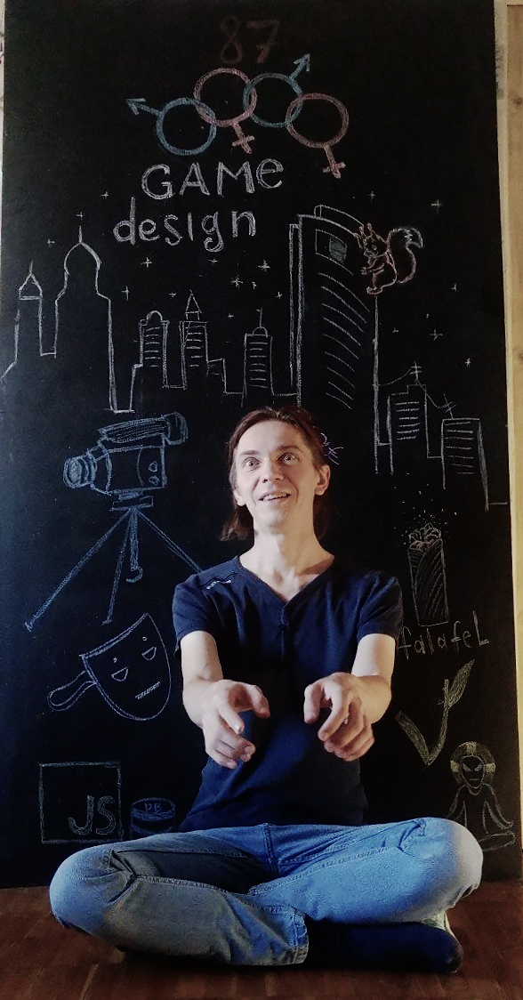

I like to explore what happens at the edges between things. I have a Specialist degree in mathematics (roughly equivalent to a master’s) and a master’s degree in psychology.
My lifelong passion is contemporary art. I’ve kept teaching myself and learning by doing. I have created many artworks that combine data visualization, cognitive and positive psychology, spiritual practices, and contemporary art.
I also explore cities on foot or by kick scooter. I love finding places where nature and the city meet.
